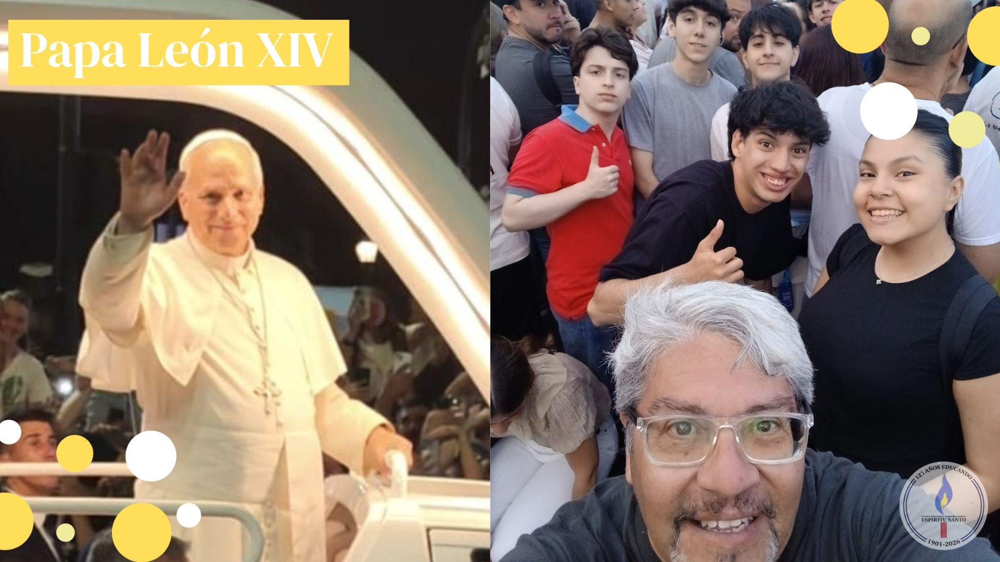

Papa León XIV en Argentina: Vigilia con los jóvenes en Buenos Aires
Por: Agustina Villareal

Participaron algunos alumnos del CEAES
El martes 10 de noviembre fuimos a la Vigilia de los Jóvenes con el Papa León XIV en el Monumento de los Españoles, en Palermo. Éramos un grupo de alumnos del nivel secundario, acompañados por el rector Ricardo Barboza y la verdad es que estuvo muy bien desde que arrancamos.
Cuando llegamos nos permitieron ingresar en el sector celeste y nos pusimos a esperar. Entre charlas, partidas de truco, mates y música de las bandas que tocaron antes, la tarde y el comienzo de la noche pasaron tranquilos y entretenidos, con mucha gente de todos lados y buena onda. A medida que se acercaba la hora se notaba más movimiento y expectativas.
Cerca de las ocho de la noche llegó León XIV en el papamóvil y ahí sí se armó un clima emotivo y emocionante. Estuvo bueno escucharlo hablar, porque tiró un mensaje bastante directo: nos pidió que no nos quedemos mirando la vida desde afuera ni encerrados en las pantallas, sino que nos animemos a construir puentes y a caminar juntos en lo concreto. También estuvieron muy buenos los testimonios de otros chicos que subieron a contar historias reales de su vida y de cómo llevan la fe en el día a día.
Después vinieron los fuegos artificiales que iluminaron el cielo en Palermo y finalizó el encuentro. Fue una noche distinta con el grupo del colegio, pero que está bueno haber vivido.
Leer otras notas
Simulacro de elecciones generales 2º A y B
Emprendimiento de 5to B con Junior Archievement: "POFYN"
Publicidad